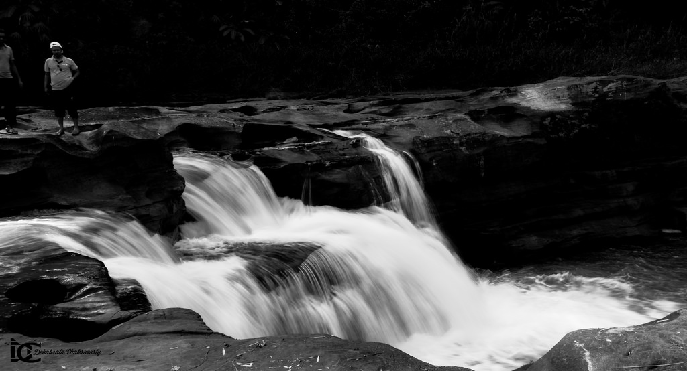

Bandarban is in Chittagong division and located in southeastern Bangladesh. It is one the most attractive travel destination in Bangladesh for its adventurous characteristics and heavenly scenic beauty. This eventually gets really hard to leave if anyone visits Bandarban. The scenic beauty will undoubtedly captivate your soul. Bandarban includes the three highest peak of Bangladesh — Tahjindong (or Bijoy), Mowdok Mual (or Saka Haphong) and Keokradong.
characteristics and heavenly scenic beauty. This eventually gets really hard to leave if anyone visits Bandarban. The scenic beauty will undoubtedly captivate your soul. Bandarban includes the three highest peak of Bangladesh — Tahjindong (or Bijoy), Mowdok Mual (or Saka Haphong) and Keokradong.
Anyone can easily hike through the jungle and hilly rivers to win any of these three god’s creations. There are so many waterfalls hidden through the hills of Bandarban would appear in your hiking. The exotic offerings such as foods, tribal handicrafts etc from the tribal people will delight your heart. Meanwhile you can easily experience the tribal culture very closely.
Shoilo Propat or Shoylo Propat is at Milanchari and 4km from the town on the road to Thanchi. This waterfall is a tourist site maintained by Bangladesh Parjatan Corporation. During the rainy season, the water flow becomes really furious. While visiting this water you may want to roam around the small market near this waterfall for handicrafts, handloom products and exotic foods sold by the tribal people.
During the rainy season, the water flow becomes really furious. While visiting this water you may want to roam around the small market near this waterfall for handicrafts, handloom products and exotic foods sold by the tribal people.
After reaching at Bandarban, take local transport to reach that waterfall in Thanchi Upazila. So you can hire a private jeep or auto rickshaw to go there.
Nafakhum is one of the most beautiful waterfalls in Bangladesh. Nafakhum is situated on the wild hilly Sangu River at a remote area called Remakri of Thanchi upazilla under Bandarban Hill District in Bangladesh. Nafakhum is also known as Remakri waterfall.
Every traveler should have a tour plan to visit this beautiful tourism spot of Bandarban at least once and then they will feel to visit that travel spot again and again.
Travelers should reach to Bandarban if they are interested to have a tour to this Nafakhum waterfall. There are many bus services among the districts of Bangladesh to reach Bandarban.
Boga Lake is the most beautiful natural lake in Bangladesh. It is also known as Bagakain Lake or Baga Lake. Boga lake is 18 kilometer away from Ruma Sadar Upozilla in Bandarban. The area of this lake is about 15 acres.It is about 3000 feet above sea level. The color of water of this lake is blue and very nice.There are many mythological stories behind the creation of this lake. There are many tourists make their way to Boga lake every year, specially in the winter season. Small tribe community like Bawm, Khumi have localities besides the Boga lake.
The area of this lake is about 15 acres.It is about 3000 feet above sea level. The color of water of this lake is blue and very nice.There are many mythological stories behind the creation of this lake. There are many tourists make their way to Boga lake every year, specially in the winter season. Small tribe community like Bawm, Khumi have localities besides the Boga lake.
In the rainy season, it is quite difficult to stroll beside the boga lake. The road from Ruma to Boga lake is still under construction. There waiting lots of pleasure and delight for you at Boga lake. You will definitely be amazed looking at the big rocks lying in and out of the Boga lake. You can have a camp fire beside the lake, that will be unbelievable and mind-blowing memory in your life.
Bogalake, an inscriptive endowment of beauty and pleasure at Bandarban, Bangladesh
Nature lovers always feel a thirst inside for beauty, thrill and enchantment. And the holy nature has bestowed Bangladesh with an overwhelming and unparallel creature which is publicly known as Boga Lake. Bogalake is considered as a source of wonder, unlimited beauty and adventure for the nature`s lovers and travelers. So Boga Lake is waiting with its unique beauty for those adventurous travelers who just not only want to satisfy their eyes with artificial and tedious natural beauties but also want to fill their heart with eternal joy and thrill to innovate their restless mind. And it has emerged like a holy duty of the travelers and tourists to visit the Boga Lake as soon as possible to highlight the beauty with thrill.
The origin of the name Boga lake is derived from some domestic mythological stories. The word Boga is derived from the local word Baga which means a dragon or fire. Actually some super natural stories flame the fire about the lake being the accommodation of an ancient dragon indeed and that concludes the story of the identification of Boga lake
Anthropologists define Boga lake as 2000 year old hill enclaved natural lake of Bandarban,Bangladesh. Boga lake is accompanied with deep bamboo bushes from its three sides wich are bounded by mountain peaks. Again, Boga lake is recognized as the highest natural lake of Bangladesh which is approximately 1500 ft above the sea level. Boga lake has a rectangular shap either funnel shape. But some experts argue that the Boga lake is about (3000-3700) fts above the sea levels indeed. The lake is supposed to be 38 meter deep. There remains a small spring beside the Boga lake which is called Bagachhara (153m deep). Boga lake is a closed lake and to drain out water there is no outlet. Basically Bagachhara is the fundamental source of water along with surface drainage, rain water and seepage of spring, soft and small rocks of different shapes have almost covered Boga lake surface.
The beauty and attraction of the Boga lake changes with the color change of the lake. Depending on various indicators like sun rays, clouds` humidity and the so called existence of a hot spring at the bottom of the Boga lake the water of the Boga lake takes different color at different seasons. But usually the lake water shows its extra –ordinary crystal clear mirror view of blue shade which reflects like pearls and more than enough to astonish a tourist guy.
It is easy to imagine for the common people that almost 1500 ft above sea level and unfavorable natural area of Boga lake has made it without any existence of human community or barren area indeed. But the tourists and travelers will feel relieved to know that they will find numbers of local tribes like Bawm or Bom, Khumi and others on their way and in the Boga lake area too.
The local tribal communities have interesting arrangements for the tourists and travelers accommodation of the Boga Lake. They have built small but attractive cottages with sufficient facilities within their range.
Nilgiri or Nil Giri is one of the tallest peaks and beautiful tourist spot in Bangladesh. It is about 3500 feet high and situated at Thanci Thana. It is about 46 km south of Bandarban on the Bandarban-Chimbuk-Thanchi road. Beside this spot you can see Mro villages. Their colorful culture and living style are surely an unexplored experience for the visitors. In rainy season here creates a spectacular scenery, the whole spot is covered with the blanket of clouds. You can enjoy a cloudy experience. Winter is waiting for you with it’s foggy gesture on the height. It is a nice place for campfire in that season. Most attractive time is the dawn. It is better if you chose to stay during 7-18 dates of a lunar month to enjoy the moonlit night. You can also enjoy the serpentine course of Sangu River. This is the most spectacular tourist spot in Bandarban and managed by Army brigade of Bandarban.
on the Bandarban-Chimbuk-Thanchi road. Beside this spot you can see Mro villages. Their colorful culture and living style are surely an unexplored experience for the visitors. In rainy season here creates a spectacular scenery, the whole spot is covered with the blanket of clouds. You can enjoy a cloudy experience. Winter is waiting for you with it’s foggy gesture on the height. It is a nice place for campfire in that season. Most attractive time is the dawn. It is better if you chose to stay during 7-18 dates of a lunar month to enjoy the moonlit night. You can also enjoy the serpentine course of Sangu River. This is the most spectacular tourist spot in Bandarban and managed by Army brigade of Bandarban.
There is beautiful resort in the top of the mountain maintain by the Bangladesh Army. You have to confirm the reservation through army officer. There are three well furnished cottages ranging from Tk4000-7000. There are also three tents having 4 beds each Tk2000 per tent. There is also restaurant, helipad etc. Electricity available from 6-9 pm and temperature near 10-25 degree Celsius.
Nilgiri is 46 kilometer away from Bandarban sadar. Visitor can hire a private vehicle from Bandarban sadar or you can go there by Thanci bound bus or jeep. On the way to Nilgiri Visitor have to register his name and address to the military check post.
While visiting Bandarban, you have to hike through the mysterious hills of Bandarban, drive through the zigzag hilly roads, or struggles against the fiery Sangu river. This trip is a lifetime opportunity for any travelers. The travelers need an expert driver to move one place to another place. And the local drivers of Bandarban are very expert in driving through the hilly roads. It is better to use double gear vehicle. The vehicle can easily be rented from the Bandarban town. It is better to book transport and accommodation to avoid any last-minute trouble.
Plan 1: Bandarban – Golden Temple – Meghla – Nilachol – Bandarban.
Plan 2: Bandarban – Milonchori – Shoilo Propat – Chimbuk – Nilgiri – Bandarban.
Plan 3: Transport Package–3: Bandarban – Golden Temple – Meghla – Nilachol – Milonchori – Shoilo Propat – Chimbuk – Nilgiri – Bandarban.
Plan 4: Bandarban – Ruma – Bogalake – Bandarban.
Shyamoli Paribahan
Arambagh Counter – (+8802) 7194291, 7193910
Asad Gate Counter – (+8802) 9123471, 8124881, 9124514
Darussalam/Technical Counter – 01712-008672
Fakirapool -